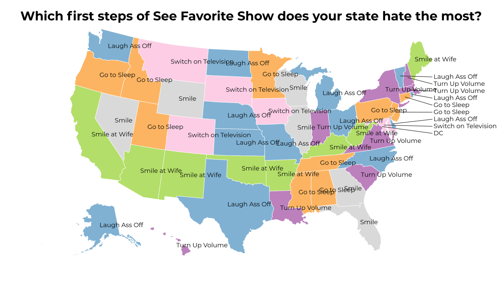
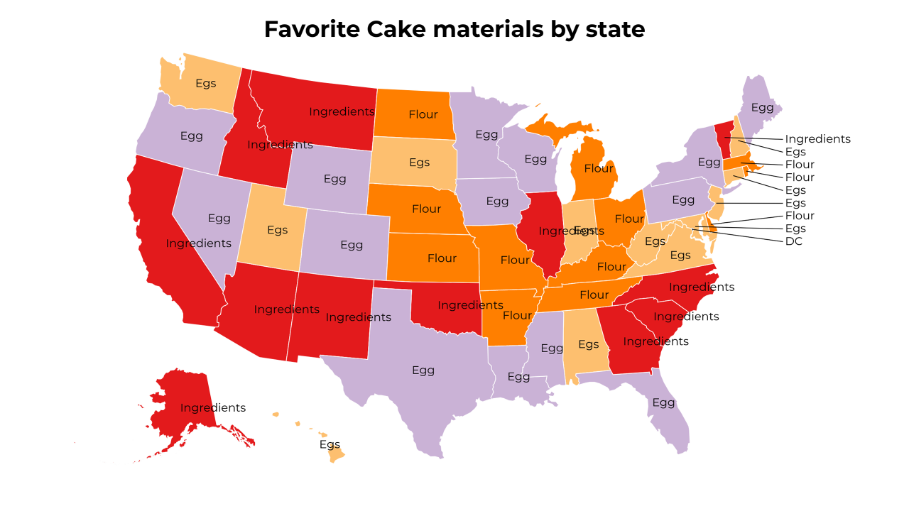
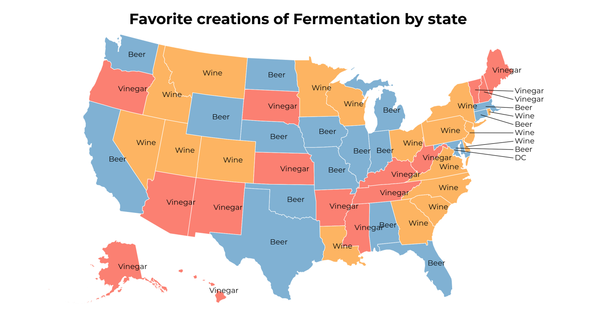
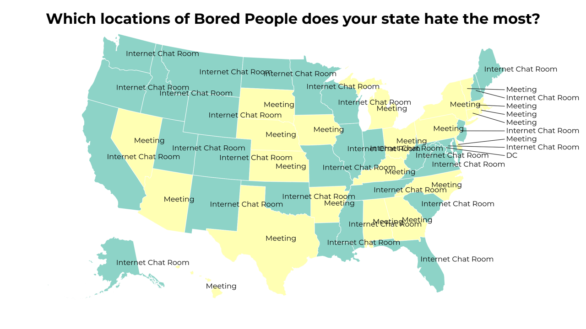
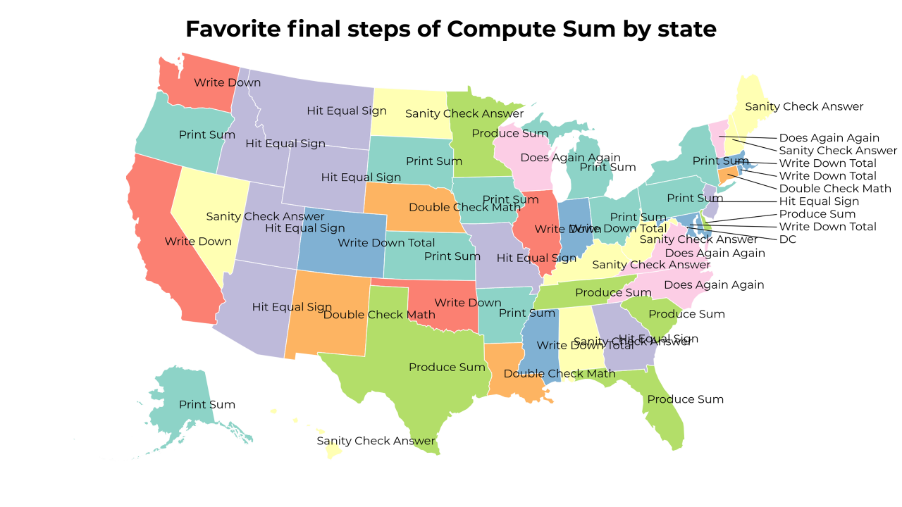
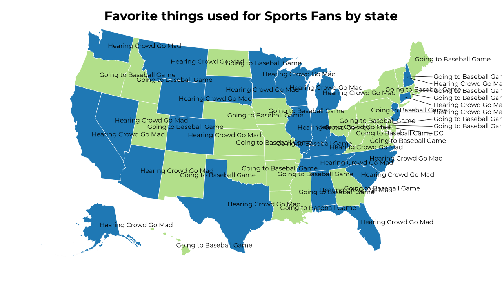
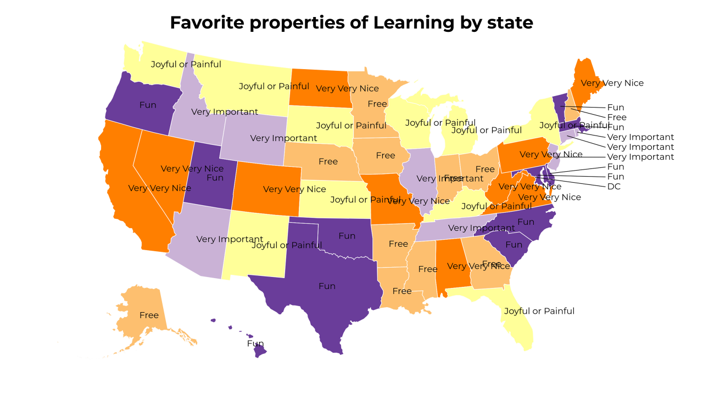
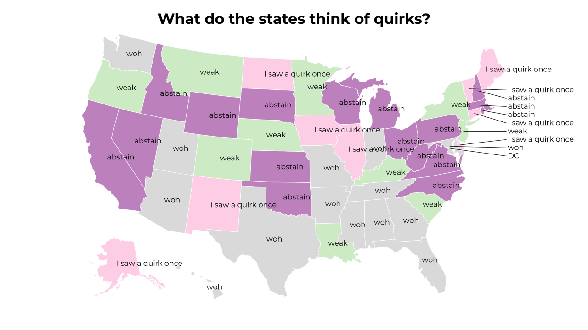
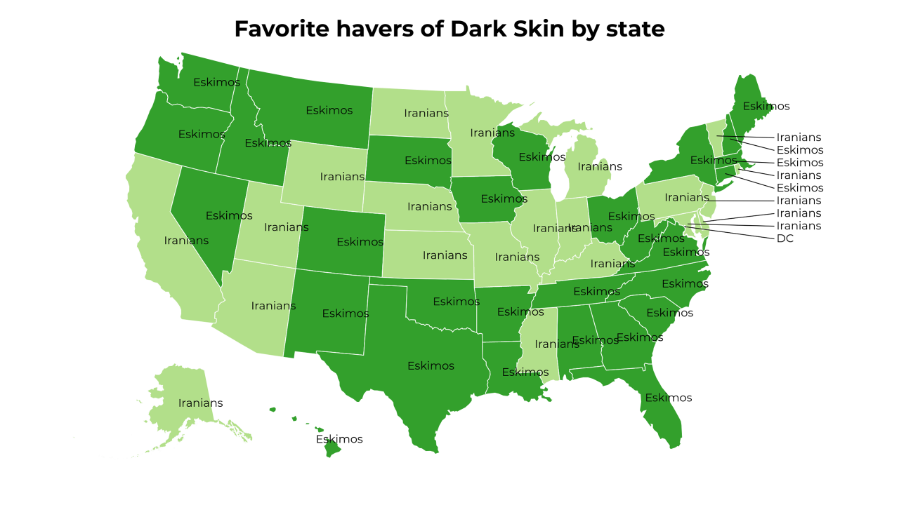
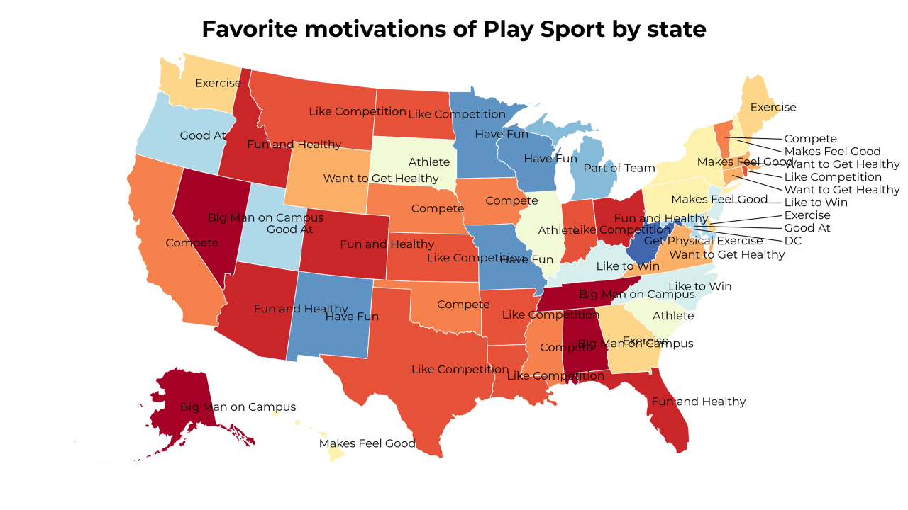

A Land of Contrasts
2018-6-8 02:30:16

Which first steps of See Favorite Show does your state hate the most?
2018-6-7 23:30:16

Favorite Cake materials by state
2018-6-7 17:30:17

Favorite creations of Fermentation by state
2018-6-7 11:30:17

Which locations of Bored People does your state hate the most?
2018-6-7 08:30:17

Favorite final steps of Compute Sum by state
2018-6-7 05:30:16

Favorite things used for Sports Fans by state
2018-6-7 02:30:17

Favorite properties of Learning by state
2018-6-6 23:30:16

What do the states think of quirks?
2018-6-6 20:30:20

Favorite havers of Dark Skin by state
2018-6-6 17:30:18

Favorite motivations of Play Sport by state
41
|
40
|
39
|
38
|
37
|
36
|
35
|
34
|
33
|
32
|
31
|
30
|
29
|
28
|
27
|
26
|
25
|
24
|
23
|
22
|
21
|
20
|
19
|
18
|
17
|
16
|
15
|
14
|
13
|
12
|
11
|
10
|
9
|
8
|
7
|
6
|
5
|
4
|
3
|
2
|
1
|
0